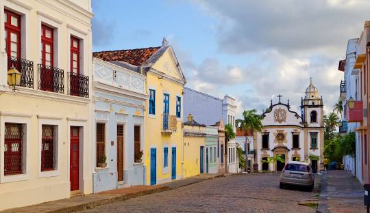

Olinda

Conhecida por suas ladeiras, igrejas históricas e o famoso carnaval.
Pontos Turísticos
- Convento de São Francisco
- Praça do Carmo
- Rua do Amparo
Cuidados a Serem Tomados
- Fique atento ao trânsito nas ladeiras.
- Cuide de seus objetos pessoais durante o carnaval.